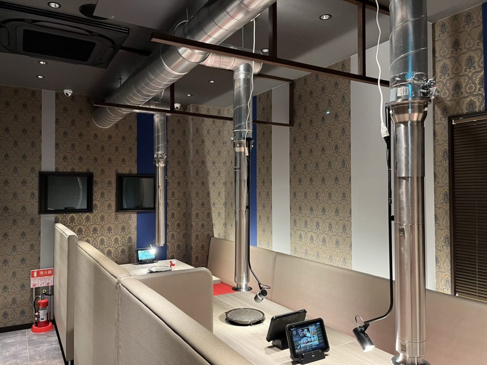
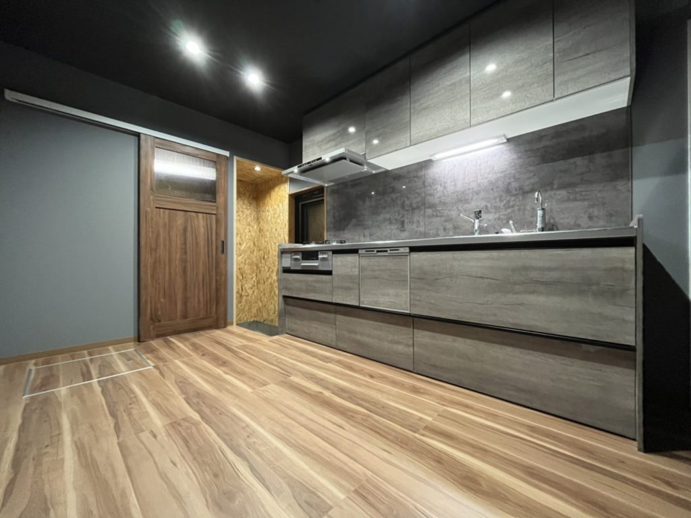

-
0000.00.00

-
0000.00.00

-
0000.00.00

千葉県匝瑳市の設備工事会社
水・電気・浄化槽。設備工事を、一社で。
株式会社オヨカワ設備工業｜給排水・電気・浄化槽
千葉県匝瑳市を拠点に、東総・北総エリアの工務店さまの設備パートナーとして、水道の申請から施工・引き渡し後の対応まで引き受けます。
WATER●ELECTRIC●SEPTIC TANK●AIR CONDITIONING●OYOKAWA SETSUBI KOGYO●WATER●ELECTRIC●SEPTIC TANK●AIR CONDITIONING●OYOKAWA SETSUBI KOGYO●
WATER●ELECTRIC●SEPTIC TANK●AIR CONDITIONING●OYOKAWA SETSUBI KOGYO●WATER●ELECTRIC●SEPTIC TANK●AIR CONDITIONING●OYOKAWA SETSUBI KOGYO●
千葉県匝瑳市の設備工事会社
水・電気・浄化槽。設備工事を、一社で。
東総・北総エリアの工務店さまの設備パートナーとして、水道の申請から施工・引き渡し後の対応まで引き受けます。
企業の方へ｜取引のご相談 →
Facts
数字で見るオヨカワ設備工業
1989年
前身「及川電気設備」創業
5種
許可・指定・届出
6種
保有する国家資格等
○○社
お取引のある工務店・建設会社
For Builders
設備業者の手配で、こんなお困りごとはありませんか？
- 給排水・電気・浄化槽で、業者を別々に手配している
- 水道の申請や浄化槽の届出まで任せられる業者がいない
- 繁忙期に設備業者がつかまらず、工程が止まる
- 引き渡し後の不具合に、すぐ動いてもらえない
SOLUTION
オヨカワなら、窓口ひとつで完結します。
給排水衛生・電気・浄化槽・空調をまとめてお受けします。各自治体の指定工事店として、申請手続きも当社で対応。現場ごとの業者調整の手間を減らします。
REASON
Why Oyokawa
現場を止めない。窓口を増やさない。
オヨカワ設備工業が工務店さま・建設会社さまに選ばれる理由をご紹介します。
01
設備工事をワンストップで
水・電気・浄化槽・空調を一括で。発注窓口を一本化できます。
02
各自治体の指定工事店
八匝水道企業団・多古町・旭市・香取市の指定給水装置事業者。水道の申請まで対応します。
03
有資格の職人が自社施工
管工事施工管理技士・浄化槽設備士・電気工事士などの有資格者が現場を担当します。
04
電気設備から続く技術
平成元年創業の「及川電気設備」が前身。電気と水、両方が分かる施工をお届けします。
{{ activeEn }}
Service
事業内容
給排水衛生設備を中心に、電気・浄化槽・空調まで。住宅から店舗、畜産施設、公共施設まで、建物の設備工事をまとめてお受けしています。
{{ plate.num }} / {{ plate.total }}
WATERELECTRICSEPTIC TANKPARTNERWATERELECTRICSEPTIC TANKPARTNER
WATERELECTRICSEPTIC TANKPARTNERWATERELECTRICSEPTIC TANKPARTNER
PARTNER
STEP 1ご相談電話・フォーム
STEP 2現場確認図面・打合せ
STEP 3お見積り無料
STEP 4施工申請も対応
Works
施工実績
工務店さま・建設会社さまからのご依頼を中心に、最新の施工事例をご紹介します。
Voice
お取引先さまの声
LOGO
「申請まで任せられるので、工程が組みやすい」
給排水と浄化槽をまとめてお願いでき、申請の段取りも任せられるので、社内の調整が減りました。
LOGO
「急な不具合でも、すぐに来てくれる」
引き渡し後の不具合にも、窓口ひとつで対応してもらえるので施主さまへの説明がしやすくなりました。
RECRUITRECRUITRECRUITRECRUITRECRUITRECRUIT
RECRUITRECRUITRECRUITRECRUITRECRUITRECRUIT

FAQ
よくあるご質問
Q1現場だけの依頼でも対応してもらえますか？＋
はい、対応しています。まずは1現場からのご相談も歓迎しています。
Q水道の申請手続きも依頼できますか？＋
はい。オヨカワ設備工業は八匝水道企業団・多古町・旭市・香取市の指定給水装置事業者、旭市・香取市の下水道排水設備指定工事店です。申請手続きも当社で対応します。
Q対応エリアはどこまでですか？＋
千葉県匝瑳市を拠点に、千葉県内に対応しています。周辺地域もご相談ください。
Q浄化槽の補助金について相談できますか？＋
はい。浄化槽の交換など、工事によっては自治体の補助金制度を利用できる場合があります。お気軽にご相談ください。
個人のお客様へ｜水回りリフォーム・水漏れのご相談
浴室・キッチン・トイレのリフォーム、水漏れ修理、浄化槽の交換（補助金のご案内）も承ります。
Contact
お問い合わせ
ご相談の内容に合わせて、窓口をお選びください。
FOR BUSINESS企業の方新規のお取引・お見積りのご依頼、協力会社のご相談
取引について相談する→
FOR HOME個人のお客様水回りリフォーム・水漏れ・浄化槽の交換
個人のご相談→
RECRUIT求職者の方管工事・電気工事の経験者を募集しています
エントリーする→
TEL 0479-79-2707
受付 8:00〜17:00（日曜・祝日除く）